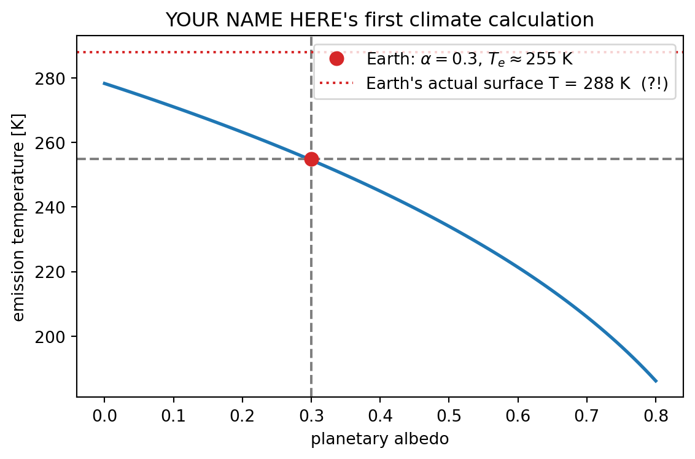

# EDIT THIS CELL
name = "YOUR NAME HERE"
uni = "YOUR UNI HERE"
print(f"Lab 0 submitted by {name} ({uni})")Lab 0 submitted by YOUR NAME HERE (YOUR UNI HERE)⇩ Download this notebook (.ipynb)
Then upload it to leap.2i2c.cloud and open it there.
Introduction to Climate Modeling · Fall 2026
Run every cell in this notebook (Shift+Enter). If all cells run without errors and the plot at the end appears, your environment works. Then follow the Lab 0 instructions to put this notebook in your course GitHub repository.
Fill in the next cell first.
Lab 0 submitted by YOUR NAME HERE (YOUR UNI HERE)These are the libraries we’ll use all semester. This cell just confirms they import and prints their versions.
python 3.11.15
numpy 2.4.6
matplotlib 3.10.9
xarray 2026.4.0
All imports OK ✅The emission temperature of a planet is the temperature it must radiate at to balance the sunlight it absorbs:
\[T_e = \left[\frac{S_0(1-\alpha)}{4\sigma}\right]^{1/4}\]
where \(S_0\) is the solar constant, \(\alpha\) the planetary albedo (how reflective the planet is), and \(\sigma\) the Stefan–Boltzmann constant. Next week we’ll derive this and discover why it gives the wrong answer for Earth’s surface — in the most interesting way possible.
For now: run the cell and look at the plot.
S0 = 1361.0 # solar constant [W m-2]
sigma = 5.67e-8 # Stefan-Boltzmann constant [W m-2 K-4]
albedo = np.linspace(0.0, 0.8, 100)
T_e = (S0 * (1 - albedo) / (4 * sigma)) ** 0.25
fig, ax = plt.subplots(figsize=(6, 4))
ax.plot(albedo, T_e, lw=2)
ax.axvline(0.3, ls="--", color="gray")
ax.axhline(255, ls="--", color="gray")
ax.plot(0.3, 255, "o", color="tab:red", ms=8, zorder=5,
label="Earth: $\\alpha=0.3$, $T_e\\approx255$ K")
ax.axhline(288, ls=":", color="tab:red",
label="Earth's actual surface T = 288 K (?!)")
ax.set_xlabel("planetary albedo")
ax.set_ylabel("emission temperature [K]")
ax.set_title(f"{name}'s first climate calculation")
ax.legend()
fig.tight_layout()
That 33 K gap between the dashed gray line and the dotted red line? That’s the greenhouse effect, and it’s where this course begins.
Later in the course we’ll use xarray to analyze output from real climate models. This cell just makes a tiny labeled dataset and takes a mean.
<xarray.DataArray 'temperature' (month: 12)> Size: 96B
array([14.72487592, 15.19987372, 27.42894929, 8.72903474, 13.18278137,
30.11251032, 17.08798637, 17.65211583, 11.84994864, 26.32145401,
19.72092686, 23.6554155 ])
Coordinates:
* month (month) int64 96B 1 2 3 4 5 6 7 8 9 10 11 12
Attributes:
units: degC
xarray OK ✅If everything above ran cleanly:
Ctrl+S / Cmd+S).See you in class.